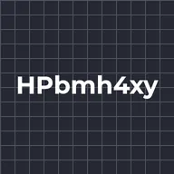

Willekeurige tekst
Vervangt willekeurig een Hoeveelheid van de tekens tussen Begin en Einde. Animeer Evolutie of verhoog Snelheid om de vervangingen te laten wisselen; Onthullen zet ze terug naar de originele tekst.
Instellingen
| Instelling | Type | Bereik | Standaard |
|---|---|---|---|
| Hoeveelheid | Getal | 0% tot 100% | 0% |
| Evolutie | Getal | -50 tot 50 | 0 |
| Onthullen | Getal | 0% tot 100% | 0% |
| Richting | Keuze | Vanaf begin, Vanaf einde, Vanuit midden, Willekeurig | Vanaf begin |
| Begin | Getal | 0% tot 100% | 0% |
| Einde | Getal | 0% tot 100% | 100% |
| Tekens | Keuze | Letters, Hoofdletters, Kleine letters, Cijfers, Letters en cijfers, Symbolen, Aangepast | Hoofdletters |
| Eigen tekens | Tekst | – | 01 |
| Snelheid | Getal | 0 tot 60 | 0 |
| Spaties behouden | Aan of uit | – | Aan |
| Seed | Getal | 0 tot 1000 | 0 |
Voorinstellingen
Kies er een op de detailpagina van het effect in de Effectenbibliotheek. Elke voorinstelling is een kant-en-klare instelling die je daarna nog kunt aanpassen.

Husselen